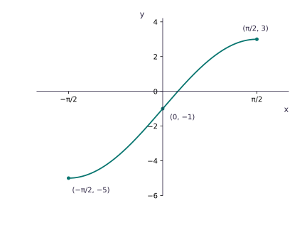

f(x) = 4 sin x − 1, −π/2 ≤ x ≤ π/2
- Endpoints: f(−π/2) = −5 and f(π/2) = 3.
- x-intercept: 4 sin x − 1 = 0, so x = arcsin(1/4) ≈ 0.253.
- y-intercept: f(0) = −1.
- Draw a rising sine-shaped curve through (−π/2, −5), (0, −1), (0.253, 0), (π/2, 3).
